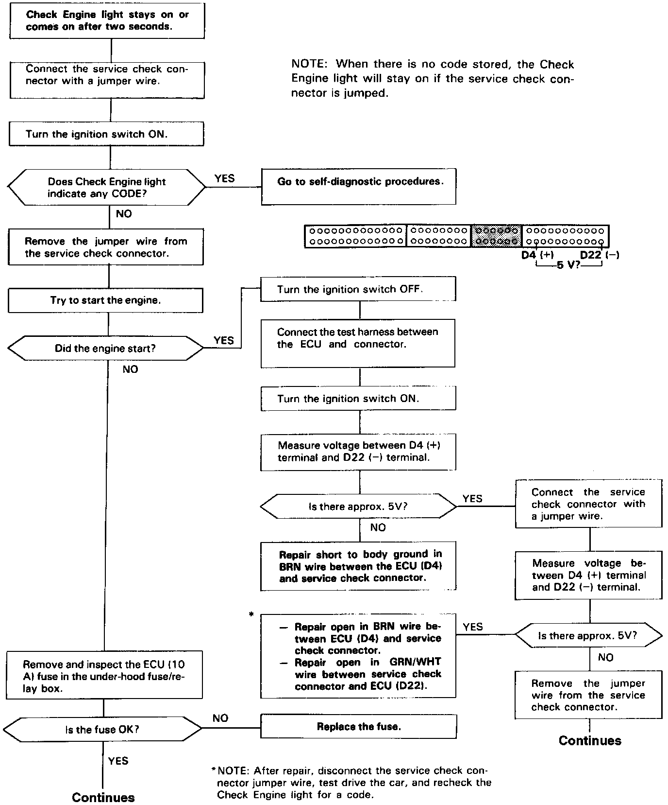

Operation CHARM
: Car repair manuals for everyone.
Home
>>
Acura
>>
1992
>>
Integra L4-1834cc 1.8L DOHC FI
>>
Repair and Diagnosis
>>
Powertrain Management
>>
Computers and Control Systems
>>
Testing and Inspection
>>
Symptom Related Diagnostic Procedures
>>
Malfunction Indicator Lamp
>>
Check Engine Light Stays ON
Check Engine Light Stays ON

Check Engine Light Stays On or Comes On After Two Seconds.